What is freeholdy
freeholdy is a single-VPS orchestrator for your Docker apps. It puts
every project behind nginx + Let's Encrypt and serves each one at its own
{name}.your_domain.com subdomain — with HTTPS wired up automatically.
You push code (a folder, a git URL, or a pre-packaged plugin); freeholdy auto-detects
whether it's a single-container Dockerfile project or a multi-container
docker-compose.yml stack (compose wins when both are present), builds it,
runs it, and wires up the reverse proxy and SSL certificate. No per-project nginx or
certbot configuration to write.
There are three ways to drive it:
- CLI —
fhcli, a small command-line client (used in the examples below). - Web UI — a control panel at
ui.<your-domain>covering the same operations in the browser. - REST API — everything above is a thin client over the API at
api.<your-domain>, authenticated with a bearer token.
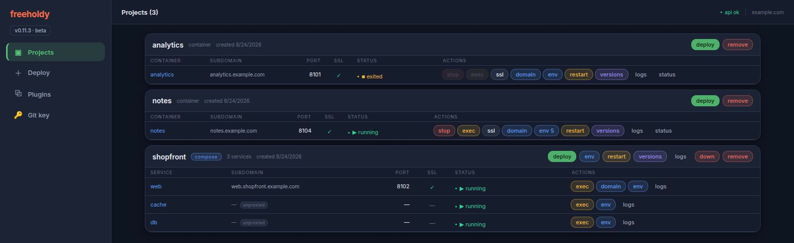
dockerfile project has a single container row; a compose
project lists every service, with the internal ones marked
unproxied (no subdomain, no port of their own).
Installation
Prerequisites
- A fresh Ubuntu VPS with root access. The installer handles all packages itself.
- A base domain with a wildcard DNS record (
*.your_domain.com) pointing at the server — projects are served at{name}.your_domain.comand the API atapi.your_domain.com.
One-command bootstrap
bash <(curl -fsSL https://raw.githubusercontent.com/aafanasev-dev/freeholdy/main/install.sh)
On a server that already runs other apps, clone the repo and run
sudo bash install.sh instead. The installer auto-detects one of two modes
and asks you to confirm before touching anything:
- FRESH — docker and/or nginx are missing → it installs what's missing. For a dedicated or empty VPS.
- COEXIST — both are already present → it never installs, restarts, or upgrades docker or nginx, and aborts early if your existing nginx config is broken. Safe next to other apps.
The installer then:
- Prompts for a service user (default
freeholdy), your base domain, and a Let's Encrypt email. - Sets up the service user with docker access and passwordless nginx/certbot sudo.
- Runs
configure.shto build the Python venv (one venv serves the server and the CLI), writes.env, and picks a free local API port. - Adds the
api.<domain>nginx vhost, obtains its SSL certificate, and installs a nightly renewal cron. - Installs and starts the
freeholdysystemd service. - Prints your first API token — shown once; save it.
Flags: -u USER (service user), -y (assume yes),
-r (redo every step). Progress is tracked in install.log, so
re-running is idempotent — it skips finished steps and can, for example, re-enable SSL
after DNS propagates.
Set up the CLI
The CLI shares the project's single venv — there is no separate one under
cli/. On your workstation, from a clone of the repo:
bash configure.sh # builds ./venv (server + CLI deps)
cp cli/.env.example cli/.env # set TOKEN and BASE_DOMAIN
See The Python environment for what
configure.sh does and its flags.
Check it works with ./cli/fhcli.py health — no
source venv/bin/activate needed, because fhcli.py
re-execs itself under ./venv/bin/python. On the server the
installer has already done this and linked fhcli into
/usr/local/bin, so you can just run fhcli health.
The same token logs you into the web UI at ui.<your-domain> — it is
stored in the browser and sent as a bearer token on every request.
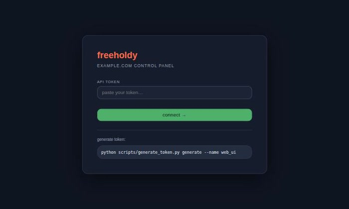
/health before being stored.
Updating freeholdy
install.sh is a bootstrap, not an upgrader — it records finished steps in
install.log and skips them on a re-run, so running it again never pulls new
code. update.sh is the supported way to move an installed server to a newer
revision.
sudo bash update.shPicking a version
It fetches from origin and lists what you can move to: the
main branch plus every release tag, each shown with the version it declares
in version.json and its latest commit. The revision you are currently on is
marked (current).
1) main v0.11.4 0bcc32c Updating help plugin (current)
2) v0.11.0 v0.11.0 2eb9030 Env variables handling
? Which version? [1]:
Use -l to see that list and exit without changing anything, or
-v REF to name a revision up front and skip the prompt. After you choose, it
prints exactly what it is about to do and asks once more —
nothing on the server changes until you confirm.
What it does
-
Removes the
webuiandfreeholdy-helpprojects, if they are installed. They are rebuilt in step 7 — that is how the new code reaches them. - Stops the
freeholdyservice. - Hard-resets the checkout to the revision you chose.
- Runs
configure.shto bring the Python environment up to date. - Backs up
data/freeholdy.db, then runsmigrate_db.sh. - Starts the service again and waits for
/healthto answer. - Re-adds the plugins it removed, waiting for each container build to finish.
| Flag | What it does |
|---|---|
-u USER | Service user. Defaults to the one read out of the systemd unit. |
-v REF | Revision to update to — main or a tag name. Skips the prompt. |
-y | Assume yes to every confirmation. Implies -v main when -v is absent. |
-l | List the available versions and exit. Changes nothing. |
What survives
Everything covered by .gitignore is kept — the reset never passes
clean -x. That means .env, data/ (your database),
projects/, dockerfiles/, compose/,
nginx_configs/, cli/.env and venv/ all stay as
they are. Your deployed projects and their containers are never touched
— only freeholdy itself is updated.
Existing API tokens keep working, so your web UI login link stays valid.
update.sh mints a temporary token for its own API calls and revokes it when
it exits, leaving no new credential behind.
git reset --hard and git clean -fd. If you have patched
anything inside the repo, commit it to your own branch first.
If it fails
Nothing is changed before you confirm, and any failure up to the moment the service stops leaves the server exactly as it was. Past that point the script prints the path of the database backup it took, the revision you were on, and the commands to put both back:
sudo -u freeholdy git -C /home/freeholdy/freeholdy reset --hard <previous-rev>
cp <backup> /home/freeholdy/freeholdy/data/freeholdy.db
sudo systemctl start freeholdyThe Python environment
configure.sh owns the project's single virtualenv at
venv/. One environment serves both the API server and
fhcli — the CLI re-execs itself under venv/bin/python, so it
needs no source venv/bin/activate.
bash configure.sh
Re-running it is cheap: it stores a hash of requirements.txt
inside the venv and skips the install while that hash still matches. That is why
update.sh can call it every time — the work only happens when the
dependencies actually changed. It also rebuilds the venv from scratch if the Python
interpreter it was built with is no longer the one on PATH.
It runs as whoever invokes it — only the python3.X-venv package fallback
needs sudo. On a server the installer already ran it as the service user.
| Flag | What it does |
|---|---|
-d DIR | Project directory holding requirements.txt. Defaults to the script's own directory. |
-f | Reinstall the dependencies even when the stored hash still matches. |
-h | Print the script's usage and exit. |
Deploying apps
There is no separate "create project" step — the first deploy creates the project, and re-running the same deploy redeploys it. Every deploy streams its build log live to your terminal.
From a folder
fhcli deploy myapp ./myapp
Uploads the folder, auto-detects the manifest — a Dockerfile (it must
EXPOSE a port) or a docker-compose.yml — builds it, runs it,
and wires up nginx + SSL at myapp.your_domain.com. Compose stacks get one
subdomain per exposed service ({service}.myapp.your_domain.com). Re-run
the command to redeploy.
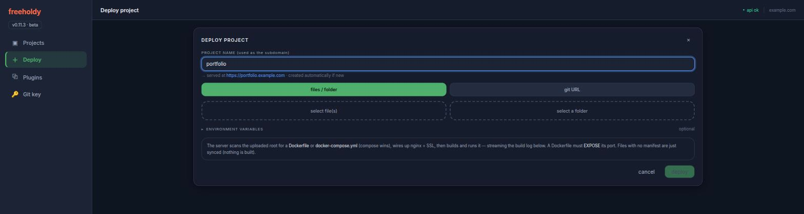
Add --env .env to store the project's
environment variables before the container first starts.
From git
fhcli deploy mysite https://github.com/owner/repo.git
fhcli deploy mysite git@github.com:owner/repo.git --branch devClones the repo on the server and runs the exact same detect → build → run → nginx pipeline. Re-run to redeploy the latest commit.
For private repos, run fhcli get-git-key — it prints the
server's SSH public key (generated on first use); add it as a deploy key on the repo,
then deploy over the git@… URL.
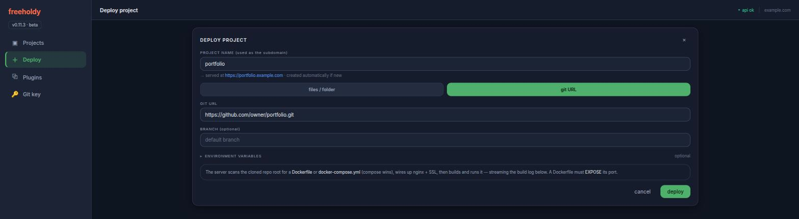
From plugins
fhcli plugins # list available plugins
fhcli plugin-add nextcloud mycloud # install one as project "mycloud"
Plugins are pre-packaged apps that deploy through the same pipeline. Some are
interactive: the install prompts you right in the terminal (e.g. to
choose an admin account) before the build starts. If your terminal disconnects
mid-install, re-running plugin-add resumes it.
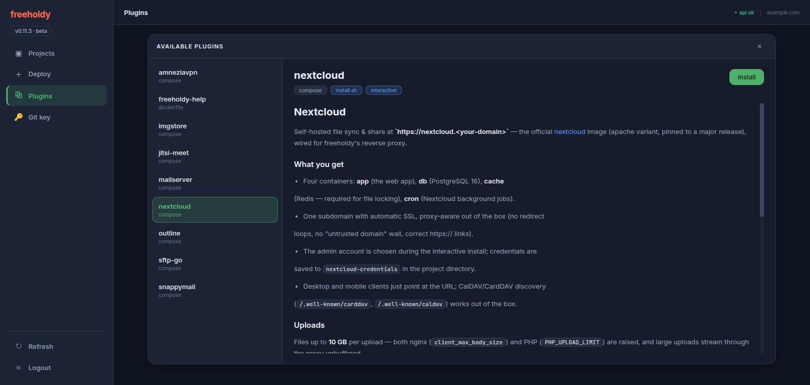
install.sh or is interactive; the panel is the
plugin's own ABOUT.md.
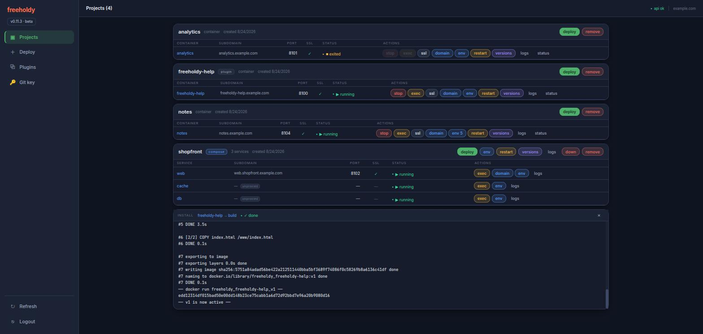
Plugin catalog
☁️ nextcloud interactive
Nextcloud file sync & share at nextcloud.<domain> (app, postgres, redis, cron). The install prompts for the admin account.
📮 mailserver interactive
Full e-mail server (docker-mailserver) — SMTP, IMAP, and DKIM at mail.<domain>. Choose addons and the first mailbox during install.
✉️ snappymail interactive
SnappyMail webmail — a web UI for your mail server at mailui.<domain>. Pairs with the mailserver plugin.
🎥 jitsi-meet interactive · UDP 10000
Jitsi Meet video conferencing at meet.<domain>. Choose the moderator account during install; UDP 10000 must be reachable from the internet.
🖼️ imgstore
Token-gated image storage — upload via a web UI, share via public links with custom names or auto sha256 URLs.
📂 sftp-go interactive
Personal SFTPGo file server — SFTP, WebDAV & WebClient over your own folder.
🛡️ amneziavpn interactive · UDP port
AmneziaWG (DPI-resistant WireGuard) VPN server on a raw UDP port — no subdomain, no SSL. Pick the port, client DNS, and first client during install; your firewall must allow the UDP port in.
🔑 outline interactive · 2 ports
Outline Server (Shadowbox) — self-hosted Shadowsocks VPN managed from the Outline Manager desktop app. Pick the API and access-key ports during install; your firewall must allow both in.
📖 freeholdy-help
This guide — a static page that also doubles as a smoke test for a fresh install.
Versions & rollback
Every deploy creates a new version, and the previous ones are kept so you can go back. The new version is built and verified before traffic moves to it, so a failed build never takes the live site down.
fhcli versions myapp # list versions: active / inactive / archived
fhcli rollback myapp 2 # make version 2 live again
fhcli set-backup-limit myapp 3 # keep at most 3 archived versionsHow a deploy switches over
Single-container projects are true blue/green. Version N is
built as its own image and started in its own container on its own local port, next to the
one still serving. Only once the build succeeds and the new container is confirmed
running does nginx get re-pointed at the new port — a one-line change and a reload. If the
build fails, nothing was touched.
Compose stacks are build-first with a brief switch. Running two copies of a
stack side by side isn't possible in general — services bind host ports themselves, some use
host networking, and named volumes are shared. So freeholdy builds and pulls
while the old stack keeps serving, tags every resulting image as version
N, and only then does a short down + up. The images
are already on disk, so the gap is seconds. A failed build or pull never reaches that point.
What the three states mean
- active — the running version nginx points at.
- inactive — the version you just replaced, kept as a stopped container for an instant rollback. Single-container projects only — bringing a compose stack down removes its containers, so compose versions go straight to archived.
- archived — older versions whose images (and, for compose, a snapshot of the project files) are retained, but whose containers are gone and whose ports are freed. Capped by the backup limit — default 5, oldest pruned first after a successful deploy.
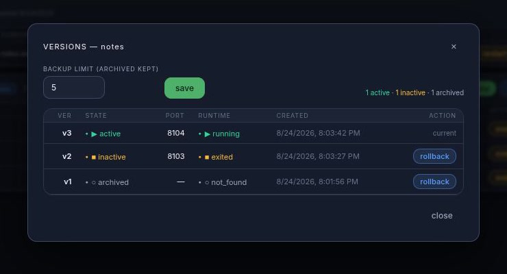
What a rollback restores
A rollback puts back code and images. For a single-container project the container is recreated from that version's image rather than just restarted — which is what lets a rollback pick up the project's current environment variables. For a compose stack, freeholdy restores the snapshot of the project files, re-wires nginx (custom domains and plugin subdomains are preserved), and brings the stack up on the retained version tags.
Rollbacks stream their log over the same channel as a deploy, so
fhcli rollback shows you exactly what is happening.
Environment variables
freeholdy stores a .env file per project on the server and injects it every
time a container is created. Nothing is baked into the image, and the values live outside
the project directory — so a git redeploy or a rollback can't wipe them.
Scopes
Each project has a project-level file. For a single-container project that file is the container's environment. For a compose stack it is shared by every service — and each service may additionally have its own file, whose values win over the shared ones.
fhcli env-set myapp .env # the project-level file
fhcli env-set mystack db.env -s db # one service (wins over the shared file)
fhcli env-get myapp # print it
fhcli env-get myapp > .env # …or save it
fhcli env-clear myapp # delete it
The format is ordinary dotenv — comments, blank lines, an export prefix, and
single- or double-quoted values are all accepted, and the file is stored exactly as you
wrote it. A malformed key or a value split across lines is rejected with the line
number, rather than quietly producing a container with a broken environment.
Applying changes
.env does nothing until the container is recreated.
fhcli restart myapp
restart recreates the container(s) from the images they are already running:
no rebuild, no new version, just a fresh container with the current
environment. For a compose project only the services whose environment actually changed are
recreated. Until you do it, freeholdy reports the stored file as not applied —
the CLI prints a hint and the web UI shows a "restart to apply" banner.
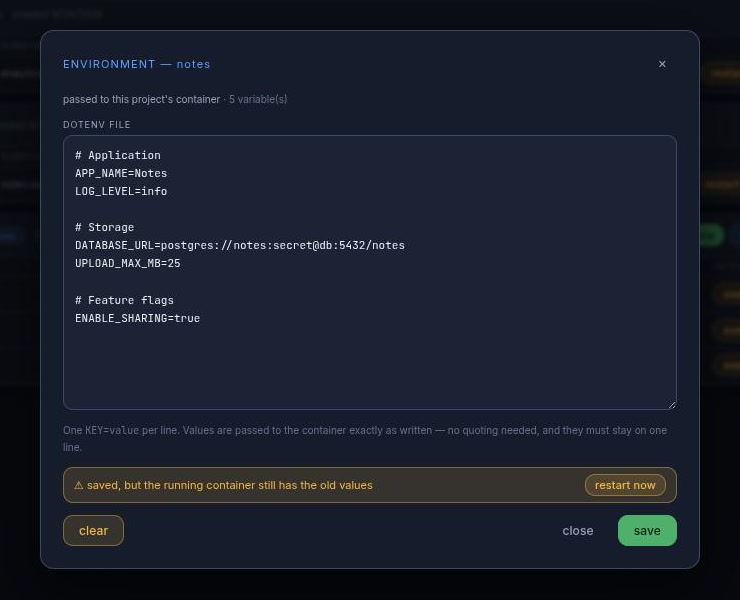
fhcli restart
does — recreate the container, no rebuild.
The first start
Because setting variables never starts anything, a project that is deployed before
its .env exists boots without one. To have the values in place for the very
first container, send them along with the deploy:
fhcli deploy myapp ./myapp --env .env
fhcli deploy mysite https://github.com/owner/repo.git --env .env
cat .env | fhcli deploy myapp ./myapp --env -
The web UI's deploy form has the same box. Leaving it blank on a redeploy
keeps whatever is already stored — it never silently wipes a project's environment.
Clearing is always explicit (fhcli env-clear).
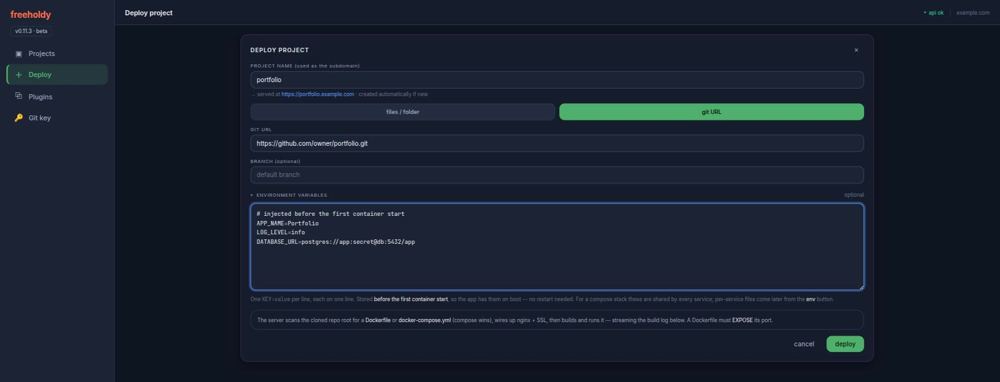
freeholdy never hands your values back out in listings: the project list carries only a count, and reading a file is a deliberate, separate request.
Logs & shell
Container logs
fhcli logs myapp # last 200 lines
fhcli logs myapp -n 50
fhcli logs mystack -s api # one compose service
fhcli logs myapp | grep -i error
This is what your app printed — the container's own stdout and stderr. For
a compose project you get the whole stack interleaved and prefixed with the service name;
-s narrows it to one service. It's a snapshot rather than a live follow, and it
goes to stdout, so it pipes and redirects cleanly.
Not to be confused with fhcli status myapp, which shows the log of the last
freeholdy operation — the build, the run, the stop. When a deploy fails,
read status; when the app misbehaves after starting, read logs.
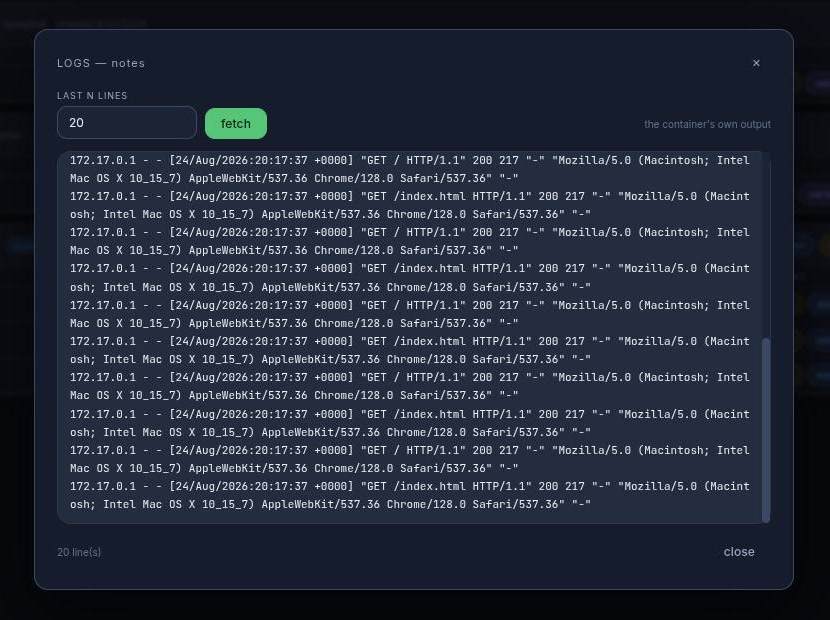
Interactive shell
fhcli exec myapp # a shell in the container
fhcli exec myapp "python manage.py shell"
fhcli exec mystack -s api # one compose serviceA real terminal over a WebSocket — a full TTY, so editors, colours, and interactive prompts all work as they would over SSH. The web UI offers the same shell in the browser.
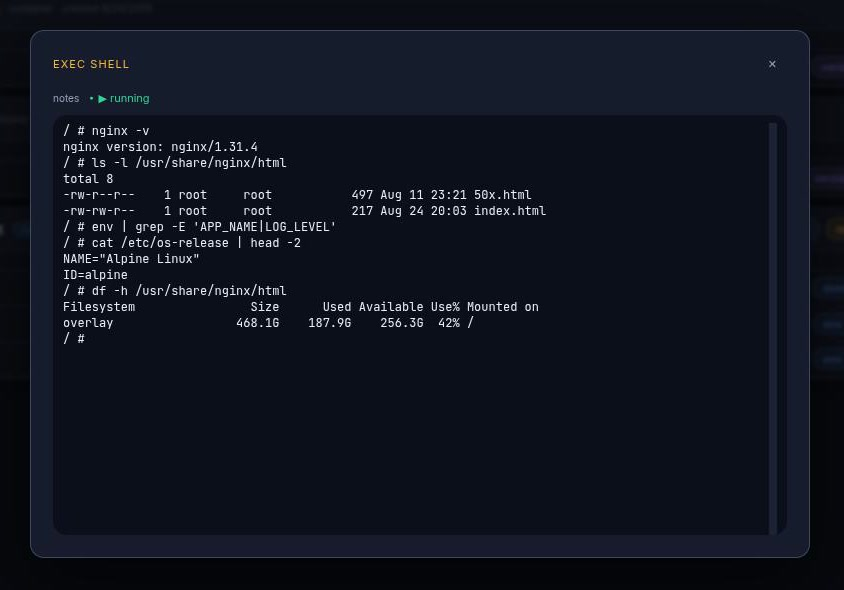
exec button, so you land in that service's container.
API
The CLI, the web UI, and the fhdeploy skill are all thin clients over one
REST API at https://api.<your-domain>. Anything they can do is
scriptable — from CI, a cron job, or your own dashboard.
- Auth — every endpoint takes
Authorization: Bearer <token>, except/health,/version, and/docs. - Interactive reference — the OpenAPI explorer is live at
https://api.<your-domain>/docs, with every request and response schema. - Long jobs return immediately — builds, deploys, rollbacks, and plugin installs respond with a
ws_path; the log streams over that WebSocket.
TOKEN=your_token_here
BASE=https://api.your_domain.com
# Deploy a folder — auto-creates the project, detects the Dockerfile or
# docker-compose.yml, builds, runs, and wires up nginx + SSL.
curl -X POST "$BASE/projects/myapp/upload" \
-H "Authorization: Bearer $TOKEN" \
-F "files=@./Dockerfile;filename=Dockerfile" \
-F "files=@./app.py;filename=app.py"
# ...or deploy straight from git (idempotent: same name = redeploy).
curl -X POST "$BASE/git/add" \
-H "Authorization: Bearer $TOKEN" -H "Content-Type: application/json" \
-d '{"name":"mysite","git_url":"https://github.com/owner/repo.git"}'
curl "$BASE/projects/myapp/status" -H "Authorization: Bearer $TOKEN"/upload above is the simple path. fhcli and the
web UI use the chunked pair instead — upload/chunk +
upload/complete, 1 MiB pieces of a staged zip — which is what large folders
need to stay under nginx's request body limit.
Endpoints
| Method | Path | What it does |
|---|---|---|
| System | ||
| GET | /health | Liveness check — no auth. |
| GET | /version | Server version — no auth. |
| Projects & deploys | ||
| GET | /projects/ | Every project with its container / service status. |
| DELETE | /projects/{name} | Full teardown — containers, images, versions, nginx config, files, DB row. |
| POST | /projects/{name}/upload | Multipart deploy. Auto-creates the project on first use. |
| POST | /projects/{name}/upload/chunk | One raw piece of a staged zip (?upload_id=&offset=). |
| POST | /projects/{name}/upload/complete | Unzip → detect manifest → provision → build + run. Optional env (dotenv text) is stored first, so it reaches the first start. |
| DELETE | /projects/{name}/upload/{id} | Abort a chunked upload and discard its staged data. |
| POST | /git/add | {"name","git_url","branch"?,"env"?} — clone + deploy. Same name redeploys. |
| GET | /git/key | The server's GitHub SSH public key, for private repos (created on first call). |
| Lifecycle — single container | ||
| GET | /projects/{name}/status | Container state plus the last job's log. |
| POST | /projects/{name}/stop | Stop the running container. |
| POST | /projects/{name}/restart | Recreate the container(s) from their current images — no rebuild. Works for both modes; this is what applies edited environment variables. |
| POST | /projects/{name}/abort | Abort the docker job currently in flight. |
| POST | /projects/{name}/ssl | Re-run certbot for the project's domains. |
| POST | /projects/{name}/domain | {"custom_domain":"app.acme.com"} — send null to revert to the subdomain. |
| Lifecycle — compose stacks | ||
| GET | /projects/{name}/compose/status | Stack state plus the last compose job's log. |
| POST | /projects/{name}/compose/down | Tear the stack down. |
| POST | /projects/{name}/compose/abort | Abort the compose job currently in flight. |
| POST | /projects/{name}/services/{svc}/domain | Custom domain for one service of the stack. |
| Versions | ||
| GET | /projects/{name}/versions | Active / inactive / archived versions with counts. |
| PUT | /projects/{name}/backup-limit | {"limit":3} — set the cap and prune right away. |
| POST | /projects/{name}/rollback | {"version":2} — make an earlier version live; returns a ws_path. |
| Environment variables | ||
| GET | /projects/{name}/env | The stored file: content, the keys in it, and applied (false → restart to apply). |
| PUT | /projects/{name}/env | {"content":"KEY=value\n…"} — replaces the whole file. Stores only; 422 names the bad line. |
| DELETE | /projects/{name}/env | Delete the file. Also takes effect on the next start. |
| GET | /projects/{name}/services/{svc}/env | One compose service's own file. |
| PUT | /projects/{name}/services/{svc}/env | Set it — its values win over the project-level file. |
| DELETE | /projects/{name}/services/{svc}/env | Delete it; the shared file still applies. |
| Container logs | ||
| GET | /projects/{name}/logs?tail=N | The last N lines the container printed (compose: the whole stack, interleaved). Default 200. |
| GET | /projects/{name}/services/{svc}/logs | The same for one compose service. |
| Plugins | ||
| GET | /plugins/ | The plugin catalog, with descriptions and deploy modes. |
| POST | /plugins/{plugin}/add | {"project_name":"mycloud"} — install it; returns a ws_path. |
There is no create endpoint and no separate build or start call — a deploy does all of it, and re-deploying is how you ship an update.
Streaming logs
Browsers can't set an Authorization header on a WebSocket, so every
freeholdy socket opens the same way: your first frame must be
{"type":"auth","token":"…"}. The server replies {"type":"ready"},
streams {"type":"stdout","data":"…"} frames, and finishes with
{"type":"exit","code":N}. Shell sockets also accept stdin and
resize frames from the client.
| Socket | What it streams |
|---|---|
WS /projects/{name}/deploy | Build + run log — uploads, git deploys, and rollbacks all land here. |
WS /projects/{name}/exec | Interactive shell in the container (?cmd= overrides the default shell). |
WS /projects/{name}/services/{svc}/exec | Interactive shell in one compose service. |
WS /plugins/{plugin}/install/{project} | Plugin install log — interactive plugins prompt over this same socket. |
WS /git/deploy/{project} | Git deploy log (read-only). |
Close codes: 4401 auth failed, 4404 not found,
4409 busy. Disconnecting never kills a build — the job keeps running on the
server, and reconnecting re-streams it.
Tokens
Tokens are minted on the server, from the repo root with the venv active:
python scripts/generate_token.py generate --name "ci"
python scripts/generate_token.py list
python scripts/generate_token.py revoke --id 3CLI reference
Every fhcli command, and what it maps to. Any of them takes
--help for its full options and examples.
| Command | What it does |
|---|---|
| Getting around | |
health | Check the server is up and the token works. |
projects | List every project with its status and endpoints. |
status PROJECT | Container state plus the log of the last freeholdy operation. |
| Deploying | |
deploy NAME SOURCE | Deploy a folder or a git URL. Creates the project if new, redeploys if not. --env, --branch, --dest. |
plugins | List the plugin catalog. |
plugin-add PLUGIN PROJECT | Install a plugin as a project; interactive plugins prompt right here. |
get-git-key | Print the server's SSH public key, for cloning private repos. |
| Running | |
logs PROJECT | What the container printed. -n lines, -s one compose service. |
exec PROJECT [CMD] | Interactive shell (or one command) inside the container. |
restart PROJECT | Recreate the container(s) — no rebuild. Applies environment changes. |
stop PROJECT | Stop the container. |
abort PROJECT | Abort the build or deploy currently in flight. |
compose-status PROJECT | Stack state plus the last compose operation's log. |
compose-down PROJECT | Bring a compose stack down. |
| Environment | |
env-get PROJECT | Print (or -o save) the stored .env. -s for one service. |
env-set PROJECT FILE | Upload it (- reads stdin). Saved only — follow with restart. |
env-clear PROJECT | Delete it. |
| Versions | |
versions PROJECT | List the versions and their states. |
rollback PROJECT N | Make version N live again. |
set-backup-limit PROJECT N | Cap the archived versions and prune now. |
| Domains & teardown | |
ssl PROJECT | Re-run certbot for the project's domains. |
domain PROJECT [DOMAIN] | Point a custom domain at it; --clear reverts to the subdomain. |
remove NAME | Full teardown — containers, images, versions, nginx config, files. |
AI integration
freeholdy ships a Claude Code skill, fhdeploy, that lets
Claude deploy to your server for you — no fhcli required. It talks to the
REST API directly: uploads a folder (or points the server at a git URL), follows the
build, and reports the live endpoints.
Setup
- Copy
skills/fhdeploy/from the freeholdy repo into your Claude Code skills directory (e.g.~/.claude/skills/). - Run it from any Claude Code session:
/fhdeploy myapp ./myapp /fhdeploy mysite https://github.com/owner/repo.git - On first use it asks for your API token (printed by the installer) and base domain, and remembers them in Claude Code memory for next time.
Beyond deploys, the skill knows the versioning API — it can list a project's versions and roll back — and the git deploy-key flow for private repos. In practice: tell Claude to build something, then tell it to ship it.